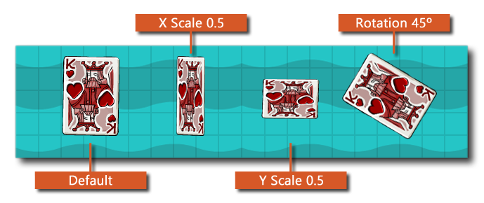

这个函数将绘制给定的sprite ，类似于动作Draw Sprite，但有额外的选项来改变被绘制的sprite 的比例、混合、旋转和框架。改变这些值并不以任何方式修改 资源的任何方式（只是它的绘制方式），而且你可以使用任何可用的精灵属性变量来代替函数中所有参数的直接值。下面的图片说明了 不同的值如何影响精灵的绘制。
注意 只有在启用WebGL的情况下，才建议对HTML5目标进行颜色混合，尽管在未启用WebGL的情况下，您仍然可以设置混合颜色，它将像正常一样混合sprite 。然而，所有以这种方式进行的混合都会创建一个重复的 sprite 然后存储在cache ，并在需要时使用。这远非最佳状态，如果你使用多种颜色变化，除非你激活WebGL，否则会降低你的游戏性能。 font cache 的大小，以便在必要时使用函数来限制它。 sprite_set_cache_size().
注意：这个动作只在各种抽奖活动中使用，如果在其他地方使用，则不会抽到任何东西。

| 争论 | 描述 |
|---|---|
| Sprite | sprite ，以绘制 |
| Frame | 要绘制的sprite 帧（使用内置变量 image_index 来表示当前帧）。 |
| X | 在房间内绘制的X位置 |
| Y | 在房间内绘制的Y位置 |
| Scale X | X轴的比例系数（使用内置变量 image_xscale ，用于当前的X比例）。 |
| Scale Y | Y轴的比例系数（使用内置变量 image_yscale ，以获得当前的Y轴比例）。 |
| Rotation | sprite 的绘制角度（从0到360，逆时针旋转，其中0是向右旋转--使用内置变量 image_angle ，以了解当前的旋转情况）。 |
| Colour | 与sprite 混合的颜色（默认为白色，你可以使用内置的变量 image_blend ，以获得当前的颜色）。 |
上面的动作块代码检查一个变量，如果它被设置为 true ，那么sprite ，沿x和y轴随机缩放，并混合红色，否则sprite ，使用默认的变换绘制。